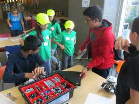
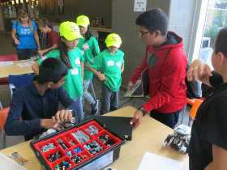

On Sunday, September 13, 2015, Ctrl-Z was invited to share its FLL experience at the 3rd annual "Get Your Bot On" Robotics Hackathon at the MaRs Discovery District. The 36-hour event focused on the design and prototyping of innovative ideas and solutions while working against the clock. The theme this year was "Healthy: People and Environments". In attendance, there were: 100 registered competitors, 20 mentors on-site, 3 age categories (Under 12, high secondary and post-secondary, industry professionals), and one robot that made tea (called teabot). The competing teams were encouraged to consider the concept of healthier people, homes, schools and workplaces in their designs. Ctrl-Z team members hosted an information booth about FIRST and educated those in attendance about FLL through demonstration of its innovative solution and its robot.


On Saturday, September 27, 2015, Ctrl-Z presented to many new and returning teams (over 220 attendees) at the FLL Trash Trek Season Kick-off and Training Event hosted at Bayview Glen School. There, the team refreshed and helped improve many enthusiasts' building, programming, and research skills. It shared various concepts, from introductory to advanced, to help other teams make the best of this year’s season.
 



On Saturday, October 31, 2015, Ctrl-Z shared its knowledge at a FLL Robotics Symposium, at St. Mildred's-Lightbourn School. It presented topics such as: programming, building, project, and the robot game. It offered workshops on a variety of topics and levels of difficulty so the attendees could maximize their learning.


On Saturday, November 28, 2015, Ctrl-Z volunteered at the Westview Centennial Secondary School regional qualifier. Team members served as score keepers, table resetters, and referees. This not only enabled them to gain a better understanding of the robot game rules, but also allowed team members to appreciate the roles of volunteers at our upcoming tournament on December 12th. As well, it was another chance to give back to the FLL community that has done so much for the team.

On Saturday, December 5, 2015, Ctrl-Z volunteered at the Mary Ward Catholic School Regional Qualifying Tournament. Team members served as table resetters, referees, score keepers, and more. The team was thrilled by the opportunity to help out other teams and give back to the FLL community which has done so much for it.


Here is a link to the PAC website article
Here is a link to the PAC NEXT website article
On Thursday, January 14th, 2016, Ctrl-Z was invited to present a live broadcast for CTV News at Noon. The team members displayed FLL's core values while sharing their research project, robot, and cheer with about 100,000 Toronto Viewers. Anwar Knight, the host of the show, interviewed the team about their Smart Sort Trash Bin.